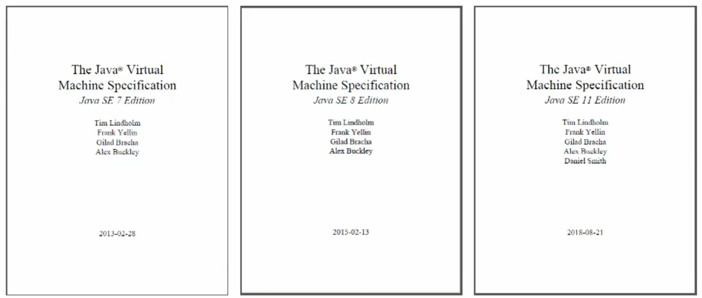
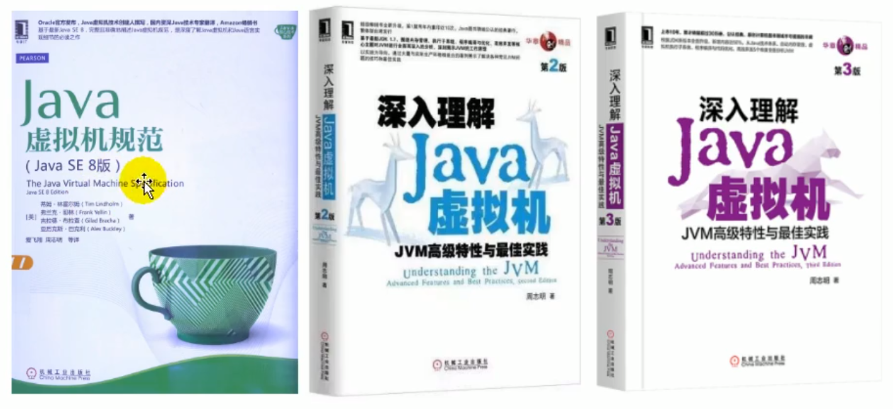
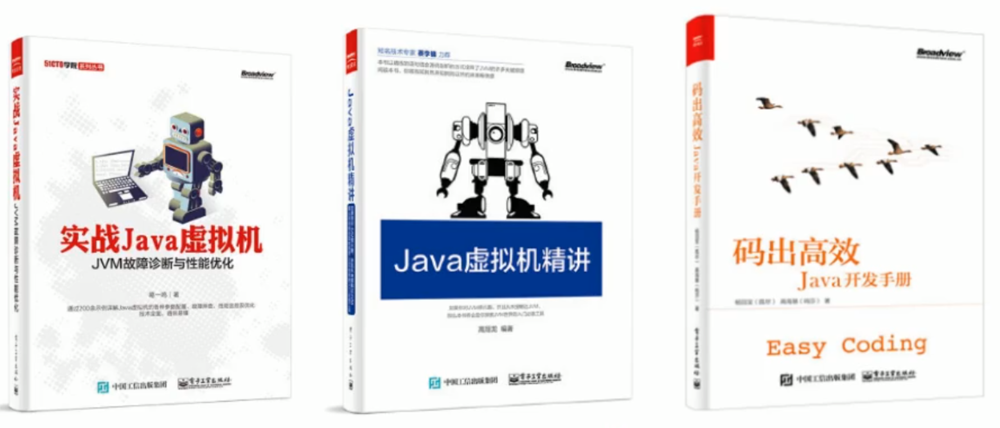
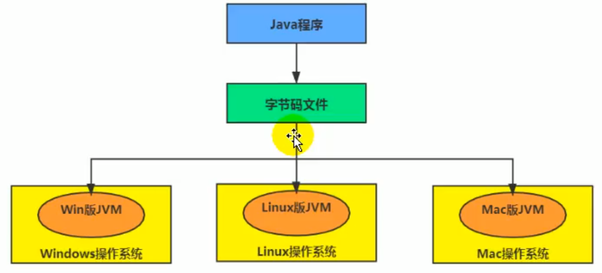
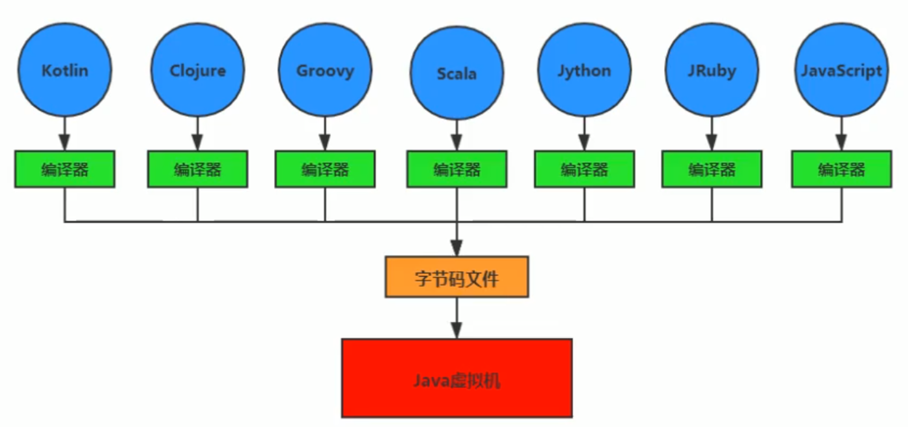
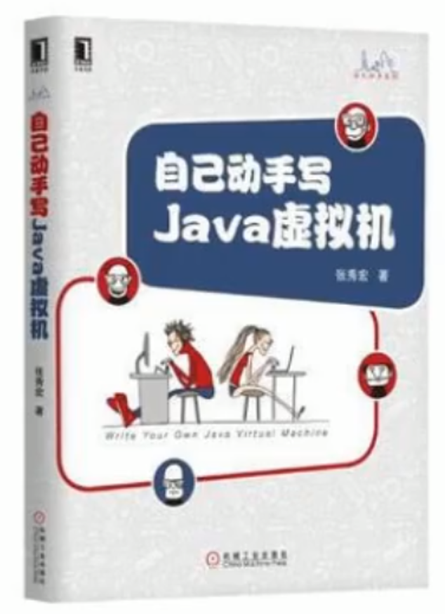
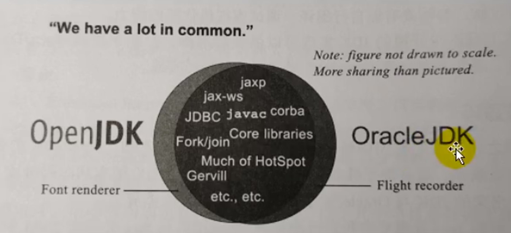
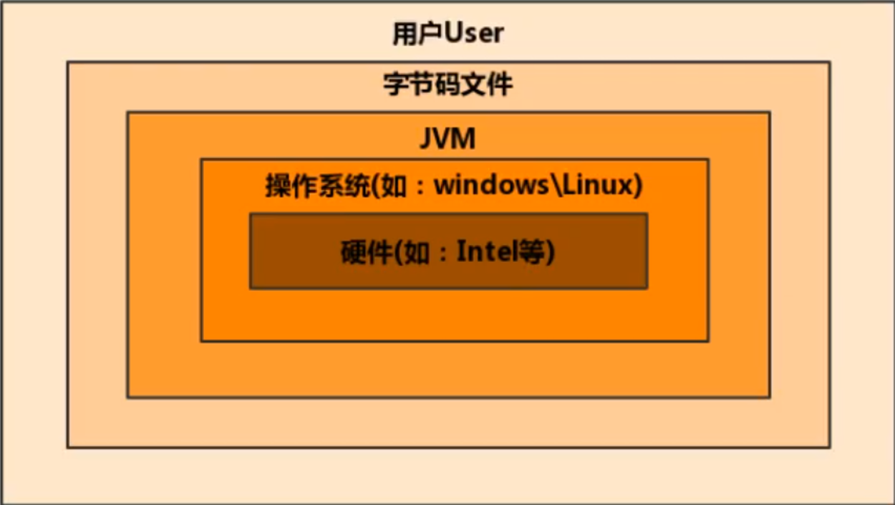
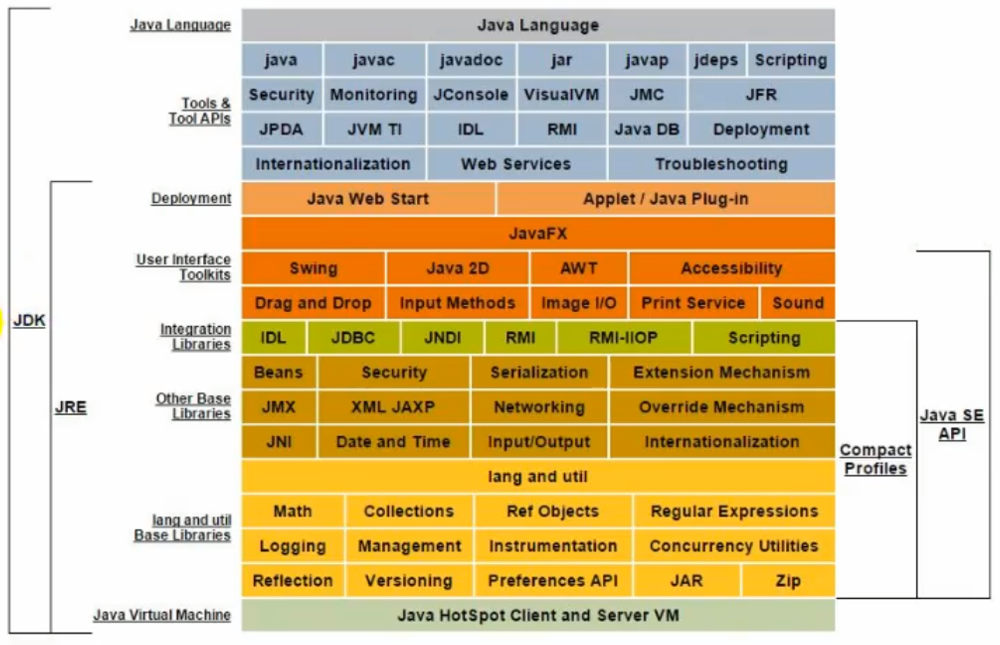
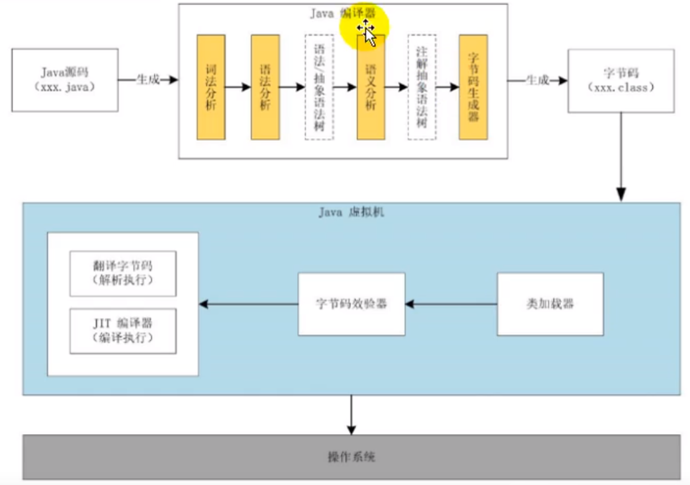

JVM和Java体系架构
前言
- 运行着的线上系统突然卡死，系统无法访问，甚至直接 OOM！
- 想解决线上 JVM GC 问题，但却无从下手。
- 新项目上线，对各种 JVM 参数设置一脸茫然，直接默认吧然后就JJ了。
- 每次面试之前都要重新背一遍JVM的一些原理概念性的东西，然而面试官却经常问你在实际项目中如何调优 VM 参数，如何解决 GC、OOM 等问题，一脸懵逼。
大部分 Java 开发人员，除了会在项目中使用到与Java平台相关的各种高精尖技术，对于 Java 技术的核心 Java 虚拟机了解甚少。
开发人员如何看待上层框架
- 如果我们把核心类库的 API 比做数学公式的话，那么 Java 虚拟机的知识就好比公式的推导过程。
- 计算机系统体系对我们来说越来越远，在不了解底层实现方式的前提下，通过高级语言很容易编写程序代码。但事实上计算机并不认识高级语言。
我们为什么要学习JVM
- 面试的需要（BATJ、TMD，PKQ 等面试都爱问）
- 中高级程序员必备技能
- 项目管理、调优的需要
- 追求极客的精神，
- 比如：垃圾回收算法、JIT、底层原理
Java VS C++
- 垃圾收集机制为我们打理了很多繁琐的工作，大大提高了开发的效率，但是，垃圾收集也不是万能的，懂得 JVM 内部的内存结构、工作机制，是设计高扩展性应用和诊断运行时问题的基础，也是 Java 工程师进阶的必备能力。
- C++ 语言需要程序员自己来分配内存和回收内存，对于高手来说可能更加舒服，但是对于普通开发者，如果技术实力不够，很容易造成内存泄漏。而 Java 全部交给 JVM 进行内存分配和回收，这也是一种趋势，减少程序员的工作量。
推荐及参考书籍
官方文档
英文文档规范：https://docs.oracle.com/javase/specs/index.html
中文书籍：
周志明老师的这本书非常推荐看，不过只推荐看第三版，第三版较第二版更新了很多，个人觉得没必要再看第二版。
Java生态圈
Java 是目前应用最为广泛的软件开发平台之一。随着 Java 以及 Java 社区的不断壮大 Java 也早已不再是简简单单的一门计算机语言了，它更是一个平台、一种文化、一个社区。
- 作为一个平台，Java 虚拟机扮演着举足轻重的作用
- Groovy、Scala、JRuby、Kotlin 等都是 Java 平台的一部分
- 作为一种文化，Java 几乎成为了“开源”的代名词。
- 第三方开源软件和框架。如 Tomcat、Struts，MyBatis，Spring 等。
- 就连 JDK 和 JVM 自身也有不少开源的实现，如 openJDK、Harmony。
- 作为一个社区，Java 拥有全世界最多的技术拥护者和开源社区支持，有数不清的论坛和资料。从桌面应用软件、嵌入式开发到企业级应用、后台服务器、中间件，都可以看到 Java 的身影。其应用形式之复杂、参与人数之众多也令人咋舌。
Java-跨平台的语言
JVM-跨语言的平台
- 随着 Java7 的正式发布，Java 虚拟机的设计者们通过 JSR-292 规范基本实现在 Java 虚拟机平台上运行非 Java 语言编写的程序。
- Java 虚拟机根本不关心运行在其内部的程序到底是使用何种编程语言编写的，它只关心“字节码”文件。也就是说 Java 虚拟机拥有语言无关性，并不会单纯地与 Java 语言“终身绑定”，只要其他编程语言的编译结果满足并包含 Java 虚拟机的内部指令集、符号表以及其他的辅助信息，它就是一个有效的字节码文件，就能够被虚拟机所识别并装载运行。
- Java 不是最强大的语言，但是 JVM 是最强大的虚拟机
-
我们平时说的 Java 字节码，指的是用 Java 语言编译成的字节码。准确的说任何能在 JVM 平台上执行的字节码格式都是一样的。所以应该统称为：JVM 字节码。
-
不同的编译器，可以编译出相同的字节码文件，字节码文件也可以在不同的 JVM 上运行。
-
Java 虚拟机与 Java 语言并没有必然的联系，它只与特定的二进制文件格式——Class 文件格式所关联，Class 文件中包含了 Java 虚拟机指令集（或者称为字节码、Bytecodes）和符号表，还有一些其他辅助信息。
多语言混合编程
-
Java 平台上的多语言混合编程正成为主流，通过特定领域的语言去解决特定领域的问题是当前软件开发应对日趋复杂的项目需求的一个方向。
-
试想一下，在一个项目之中，并行处理用 Clojure 语言编写，展示层使用 JRuby/Rails，中间层则是 Java，每个应用层都将使用不同的编程语言来完成，而且，接口对每一层的开发者都是透明的，各种语言之间的交互不存在任何困难，就像使用自己语言的原生 API 一样方便，因为它们最终都运行在一个虚拟机之上。
-
对这些运行于 Java 虚拟机之上、Java 之外的语言，来自系统级的、底层的支持正在迅速增强，以 JSR-292 为核心的一系列项目和功能改进（如 DaVinci Machine 项目、Nashorn 引擎、InvokeDynamic 指令、java.lang.invoke 包等），推动 Java 虚拟机从“Java 语言的虚拟机”向 “多语言虚拟机”的方向发展。
如何真正搞懂JVM？
Java 虚拟机非常复杂，要想真正理解它的工作原理，最好的方式就是自己动手编写一个！
Java发展重大事件
- 1990年，在 Sun 计算机公司中，由 Patrick Naughton、MikeSheridan 及 James Gosling 领导的小组 Green Team，开发出的新的程序语言，命名为 Oak，后期命名为 Java
- 1995年，Sun 正式发布 Java 和 HotJava 产品，Java 首次公开亮相。
- 1996年1月23日 Sun Microsystems 发布了JDK 1.0。
- 1998年，JDK1.2 版本发布。同时，Sun 发布了 JSP/Servlet、EJB 规范，以及将 Java 分成了 J2EE、J2SE 和 J2ME。这表明了 Java 开始向企业、桌面应用和移动设备应用 3 大领域挺进。
- 2000年，JDK1.3发布，Java HotSpot Virtual Machine 正式发布，成为 Java 的默认虚拟机。
- 2002年，JDK1.4 发布，古老的 Classic 虚拟机退出历史舞台。
- 2003年年底，Java 平台的 scala 正式发布，同年 Groovy 也加入了 Java 阵营。
- 2004年，JDK1.5 发布。同时 JDK1.5 改名为 JavaSE5.0。
- 2006年，JDK6 发布。同年，Java 开源并建立了 OpenJDK。顺理成章，Hotspot 虚拟机也成为了 OpenJDK 中的默认虚拟机。
- 2007年，Java 平台迎来了新伙伴 Clojure。
- 2008年，Oracle 收购了 BEA，得到了 JRockit 虚拟机。
- 2009年，Twitter 宣布把后台大部分程序从 Ruby 迁移到 Scala，这是 Java 平台的又一次大规模应用。
- 2010年，Oracle 收购了 Sun，获得 Java 商标和最真价值的HotSpot虚拟机。此时，Oracle 拥有市场占用率最高的两款虚拟机HotSpot 和 JRockit，并计划在未来对它们进行整合：HotRockit。JCP 组织管理 Java 语言
- 2011年，JDK7 发布。在 JDK1.7u4 中，正式启用了新的垃圾回收器 G1。
- 2017年，JDK9发布。将G1设置为默认GC，替代CMS
- 同年，IBM 的 J9 开源，形成了现在的 Open J9 社区
- 2018年，Android 的 Java 侵权案判决，Google 赔偿 Oracle 计 88亿美元
- 同年，Oracle 宣告 JavagE 成为历史名词 JDBC、JMS、Servlet 赠予 Eclipse 基金会
- 同年，JDK11 发布，LTS 版本的 JDK，发布革命性的 ZGC，调整 JDK 授权许可
- 2019年，JDK12 发布，加入 RedHat 领导开发的 Shenandoah GC
Open JDK和Oracle JDK
- 在 JDK11 之前，Oracle JDK 中还会存在一些 Open JDK 中没有的，闭源的功能。但在 JDK11 中，我们可以认为 Open JDK 和 Oracle JDK 代码实质上已经达到完全一致的程度了。
- 主要的区别就是两者更新周期不一样
虚拟机
虚拟机概念
-
所谓虚拟机（Virtual Machine），就是一台虚拟的计算机。它是一款软件，用来执行一系列虚拟计算机指令。大体上，虚拟机可以分为系统虚拟机和程序虚拟机。
- 大名鼎鼎的 Virtual Box，VMware 就属于系统虚拟机，它们完全是对物理计算机硬件的仿真(模拟)，提供了一个可运行完整操作系统的软件平台。
- 程序虚拟机的典型代表就是 Java 虚拟机，它专门为执行单个计算机程序而设计，在 Java 虚拟机中执行的指令我们称为 Java 字节码指令。
-
无论是系统虚拟机还是程序虚拟机，在上面运行的软件都被限制于虚拟机提供的资源中。
Java虚拟机
- Java 虚拟机是一台执行 Java 字节码的虚拟计算机，它拥有独立的运行机制，其运行的 Java 字节码也未必由 Java 语言编译而成。
- JVM 平台的各种语言可以共享 Java 虚拟机带来的跨平台性、优秀的垃圾回器，以及可靠的即时编译器。
- Java技术的核心就是Java虚拟机（JVM，Java Virtual Machine），因为所有的Java程序都运行在Java虚拟机内部。
作用：
Java 虚拟机就是二进制字节码的运行环境，负责装载字节码到其内部，解释/编译为对应平台上的机器指令执行。每一条Java指令，Java虚拟机规范中都有详细定义，如怎么取操作数，怎么处理操作数，处理结果放在哪里。
特点：
- 一次编译，到处运行
- 自动内存管理
- 自动垃圾回收功能
JVM的位置
JVM 是运行在操作系统之上的，它与硬件没有直接的交互
 JVM的整体结构
- HotSpot VM 是目前市面上高性能虚拟机的代表作之一。
- 它采用解释器与即时编译器并存的架构。
- 在今天，Java 程序的运行性能早已脱胎换骨，已经达到了可以和 C/C++ 程序一较高下的地步。
Java代码执行流程
凡是能生成被 Java 虚拟机所能解释、运行的字节码文件，那么理论上我们就可以自己设计一套语言了

JVM的架构模型
Java 编译器输入的指令流基本上是一种基于栈的指令集架构，另外一种指令集架构则是基于寄存器的指令集架构。具体来说：这两种架构之间的区别：
基于栈的指令集架构
基于栈式架构的特点：
- 设计和实现更简单，适用于资源受限的系统；
- 避开了寄存器的分配难题：使用零地址指令方式分配
- 指令流中的指令大部分是零地址指令，其执行过程依赖于操作栈。指令集更小，编译器容易实现
- 不需要硬件支持，可移植性更好，更好实现跨平台
基于寄存器的指令级架构
基于寄存器架构的特点：
- 典型的应用是x86的二进制指令集：比如传统的 PC 以及 Android 的 Davlik 虚拟机。
- 指令集架构则完全依赖硬件，与硬件的耦合度高，可移植性差
- 性能优秀和执行更高效
- 花费更少的指令去完成一项操作
- 在大部分情况下，基于寄存器架构的指令集往往都以一地址指令、二地址指令和三地址指令为主，而基于栈式架构的指令集却是以零地址指令为主
两种架构的举例
同样执行 2+3 这种逻辑操作，其指令分别如下：
-
基于栈的计算流程（以Java虚拟机为例）：
iconst_2 //常量2入栈 istore_1 iconst_3 // 常量3入栈 istore_2 iload_1 iload_2 iadd //常量2/3出栈，执行相加 istore_0 // 结果5入栈8 个指令
-
而基于寄存器的计算流程
mov eax,2 //将eax寄存器的值设为1 add eax,3 //使eax寄存器的值加32 个指令
具体后面会讲
JVM架构总结
-
由于跨平台性的设计，Java 的指令都是根据栈来设计的。不同平台 CPU 架构不同，所以不能设计为基于寄存器的。栈的优点：跨平台，指令集小，编译器容易实现，缺点是性能比寄存器差一些。
-
时至今日，尽管嵌入式平台已经不是 Java 程序的主流运行平台了（准确来说应该是 HotSpot VM 的宿主环境已经不局限于嵌入式平台了），那么为什么不将架构更换为基于寄存器的架构呢？
- 因为基于栈的架构跨平台性好、指令集小，虽然相对于基于寄存器的架构来说，基于栈的架构编译得到的指令更多，执行性能也不如基于寄存器的架构好，但考虑到其跨平台性与移植性，我们还是选用栈的架构
JVM的生命周期
虚拟机的启动
Java 虚拟机的启动是通过引导类加载器（bootstrap class loader）创建一个初始类（initial class）来完成的，这个类是由虚拟机的具体实现指定的。
虚拟机的执行
- 一个运行中的 Java 虚拟机有着一个清晰的任务：执行Java程序
- 程序开始执行时他才运行，程序结束时他就停止
- 执行一个所谓的 Java 程序的时候，真真正正在执行的是一个叫做 Java 拟机的进程
虚拟机的退出
有如下的几种情况：
-
程序正常执行结束
-
程序在执行过程中遇到了异常或错误而异常终止
-
由于操作系统用现错误而导致 Java 虚拟机进程终止
-
某线程调用 Runtime 类或 System 类的 exit() 方法，或 Runtime 类的 halt() 方法，并且 Java 安全管理器也允许这次 exit() 或 halt() 操作。
-
除此之外，JNI（Java Native Interface）规范描述了用 JNI Invocation API 来加载或卸载 Java 虚拟机时，Java 虚拟机的退出情况。
JVM发展历程
Sun Classic VM
- 早在 1996 年 Java1.0 版本的时候，Sun 公司发布了一款名为 sun classic VM 的 Java虚拟机，它同时也是世界上第一款商用 Java 虚拟机，JDK1.4 时完全被淘汰。
- 这款虚拟机内部只提供解释器，没有即时编译器，因此效率比较低。【即时编译器会把热点代码的本地机器指令缓存起来，那么以后使用热点代码的时候，效率就比较高】
- 如果使用 JIT 编译器，就需要进行外挂。但是一旦使用了 JIT 编译器，JIT 就会接管虚拟机的执行系统。解释器就不再工作，解释器和编译器不能配合工作。
- 我们将字节码指令翻译成机器指令也是需要花时间的，如果只使用 JIT，就需要把所有字节码指令都翻译成机器指令，就会导致翻译时间过长，也就是说在程序刚启动的时候，等待时间会很长。
- 而解释器就是走到哪，解释到哪。
- 现在 Hotspot 内置了此虚拟机。
Exact VM
-
为了解决上一个虚拟机问题，jdk1.2 时，Sun 提供了此虚拟机。
-
Exact Memory Management：准确式内存管理
-
也可以叫Non-Conservative/Accurate Memory Management
-
虚拟机可以知道内存中某个位置的数据具体是什么类型。
-
-
具备现代高性能虚拟机的维形
-
热点探测（寻找出热点代码进行缓存）
-
编译器与解释器混合工作模式
-
-
只在 Solaris 平台短暂使用，其他平台上还是 classic vm，英雄气短，终被 Hotspot 虚拟机替换
HotSpot VM（重点）
-
HotSpot 历史
-
最初由一家名为“Longview Technologies”的小公司设计
-
1997年，此公司被 Sun 收购；2009年，Sun 公司被甲骨文收购。
-
JDK1.3时，HotSpot VM 成为默认虚拟机
-
-
目前Hotspot占有绝对的市场地位，称霸武林。
-
不管是现在仍在广泛使用的 JDK6，还是使用比例较多的 JDK8 中，默认的虚拟机都是 HotSpot
-
Sun/oracle JDK 和 openJDK 的默认虚拟机
-
因此本课程中默认介绍的虚拟机都是 HotSpot，相关机制也主要是指 HotSpot 的 GC 机制。（比如其他两个商用虚机都没有方法区的概念）
-
-
从服务器、桌面到移动端、嵌入式都有应用。
-
名称中的 HotSpot 指的就是它的热点代码探测技术。
-
通过计数器找到最具编译价值代码，触发即时编译或栈上替换
-
通过编译器与解释器协同工作，在最优化的程序响应时间与最佳执行性能中取得平衡
-
JRockit（商用三大虚拟机之一）
-
专注于服务器端应用：它可以不太关注程序启动速度，因此JRockit内部不包含解析器实现，全部代码都靠即时编译器编译后执行。
-
大量的行业基准测试显示，JRockit JVM 是世界上最快的 JVM：使用 JRockit 产品，客户已经体验到了显著的性能提高（一些超过了70%）和硬件成本的减少（达50%）。
-
优势：全面的Java运行时解决方案组合
-
JRockit 面向延迟敏感型应用的解决方案 JRockit Real Time 提供以毫秒或微秒级的 JVM 响应时间，适合财务、军事指挥、电信网络的需要
-
Mission Control 服务套件，它是一组以极低的开销来监控、管理和分析生产环境中的应用程序的工具。
-
-
2008年，JRockit 被 Oracle 收购。
-
Oracle 表达了整合两大优秀虚拟机的工作，大致在 JDK8 中完成。整合的方式是在 HotSpot 的基础上，移植 JRockit 的优秀特性。
-
高斯林：目前就职于谷歌，研究人工智能和水下机器人
IBM的J9（商用三大虚拟机之一）
-
全称：IBM Technology for Java Virtual Machine，简称 IT4J，内部代号：J9
-
市场定位与 HotSpot 接近，服务器端、桌面应用、嵌入式等多用途 VM 广泛用于 IBM 的各种 Java 产品。
-
目前，有影响力的三大商用虚拟机之一，也号称是世界上最快的 Java 虚拟机。
-
2017年左右，IBM 发布了开源 J9VM，命名为 openJ9，交给 Eclipse 基金会管理，也称为 Eclipse OpenJ9
-
OpenJDK -> 是 JDK 开源了，包括了虚拟机
KVM和CDC/CLDC Hotspot
-
Oracle 在 Java ME 产品线上的两款虚拟机为：CDC/CLDC HotSpot Implementation VM
-
KVM（Kilobyte）是 CLDC-HI 早期产品
-
目前移动领域地位尴尬，智能机被 Android 和 iOS 二分天下。
-
KVM 简单、轻量、高度可移植，面向更低端的设备上还维持自己的一片市场
-
智能控制器、传感器
-
老人手机、经济欠发达地区的功能手机
-
-
所有的虚拟机的原则：一次编译，到处运行。
Azul VM
- 前面三大“高性能 Java 虚拟机”使用在通用硬件平台上
- 这里 Azul VW 和 BEA Liquid VM 是与特定硬件平台绑定、软硬件配合的专有虚拟机：高性能 Java 虚拟机中的战斗机。
- Azul VM 是 Azul Systems 公司在 HotSpot 基础上进行大量改进，运行于 Azul Systems 公司的专有硬件 Vega 系统上的 Java 虚拟机。
- 每个 Azul VM 实例都可以管理至少数十个 CPU 和数百GB内存的硬件资源，并提供在巨大内存范围内实现可控的GC时间的垃圾收集器、专有硬件优化的线程调度等优秀特性。
- 2010年，Azul Systems 公司开始从硬件转向软件，发布了自己的 Zing JVM，可以在通用 x86 平台上提供接近于 Vega 系统的特性。
Liquid VM
- 高性能 Java 虚拟机中的战斗机。
- BEA 公司开发的，直接运行在自家 Hypervisor 系统上
- Liquid VM 即是现在的 JRockit VE（Virtual Edition）。Liquid VM 不需要操作系统的支持，或者说它自己本身实现了一个专用操作系统的必要功能，如线程调度、文件系统、网络支持等。
- 随着 JRockit 虚拟机终止开发，Liquid VM 项目也停止了。
Apache Marmony
-
Apache 也曾经推出过与 JDK1.5 和 JDK1.6 兼容的 Java 运行平台 Apache Harmony。
-
它是 IElf 和 Intel 联合开发的开源 JVM，受到同样开源的 Open JDK 的压制，Sun 坚决不让 Harmony 获得 JCP 认证，最终于 2011 年退役，IBM 转而参与 OpenJDK
-
虽然目前并没有 Apache Harmony 被大规模商用的案例，但是它的 Java 类库代码吸纳进了 Android SDK。
Micorsoft JVM
-
微软为了在 IE3 浏览器中支持 Java Applets，开发了 Microsoft JVM。
-
只能在 Window 平台下运行。但确是当时 Windows 下性能最好的 Java VM。
-
1997年，Sun 以侵犯商标、不正当竞争罪名指控微软成功，赔了Sun 很多钱。微软 WindowsXP SP3 中抹掉了其 VM。现在 Windows 上安装的 jdk 都是 HotSpot。
Taobao JVM
-
由 AliJVM 团队发布。阿里，国内使用 Java 最强大的公司，覆盖云计算、金融、物流、电商等众多领域，需要解决高并发、高可用、分布式的复合问题。有大量的开源产品。
-
基于 OpenJDK 开发了自己的定制版本 AlibabaJDK，简称 AJDK。是整个阿里 Java 体系的基石。
-
基于 OpenJDK Hotspot VM 发布的国内第一个优化、深度定制且开源的高性能服务器版 Java 虚拟机。
- 创新的 GCIH（GCinvisible heap）技术实现了 off-heap，即将生命周期较长的 Java 对象从 heap 中移到 heap 之外，并且 GC 不能管理 GCIH 内部的 Java 对象，以此达到降低 GC 的回收频率和提升 GC 的回收效率的目的。
- GCIH 中的对象还能够在多个 Java 虚拟机进程中实现共享
- 使用 crc32 指令实现 JVM intrinsic 降低 JNI 的调用开销
- PMU hardware 的 Java profiling tool 和诊断协助功能
- 针对大数据场景的 ZenGC
-
taobao vm 应用在阿里产品上性能高，硬件严重依赖 inte1 的 cpu，损失了兼容性，但提高了性能
- 目前已经在淘宝、天猫上线，把 Oracle 官方 JVM 版本全部替换了。
Dalvik VM
-
谷歌开发的，应用于 Android 系统，并在 Android2.2 中提供了 JIT，发展迅猛。
-
Dalvik VM 只能称作虚拟机，而不能称作“Java虚拟机”，它没有遵循 Java 虚拟机规范
-
不能直接执行 Java 的 Class 文件
-
基于寄存器架构，不是 jvm 的栈架构。
-
执行的是编译以后的 dex（Dalvik Executable）文件。执行效率比较高。
- 它执行的 dex（Dalvik Executable）文件可以通过 class 文件转化而来，使用 Java 语法编写应用程序，可以直接使用大部分的 Java API 等。
- Android 5.0 使用支持提前编译（Ahead of Time Compilation，AoT）的 ART VM 替换 Dalvik VM。
Graal VM（未来虚拟机）
-
2018年4月，Oracle Labs 公开了 GraalvM，号称 “Run Programs Faster Anywhere”，勃勃野心。与1995年java的”write once，run anywhere"遥相呼应。
-
GraalVM 在 HotSpot VM 基础上增强而成的**跨语言全栈虚拟机，可以作为“任何语言”**的运行平台使用。语言包括：Java、Scala、Groovy、Kotlin；C、C++、Javascript、Ruby、Python、R等
-
支持不同语言中混用对方的接口和对象，支持这些语言使用已经编写好的本地库文件
-
工作原理是将这些语言的源代码或源代码编译后的中间格式，通过解释器转换为能被 Graal VM 接受的中间表示。Graal VM 提供 Truffle 工具集快速构建面向一种新语言的解释器。在运行时还能进行即时编译优化，获得比原生编译器更优秀的执行效率。
-
如果说 HotSpot 有一天真的被取代，Graalvm 希望最大。但是 Java 的软件生态没有丝毫变化。
总结
具体JVM的内存结构，其实取决于其实现，不同厂商的 JVM，或者同一厂商发布的不同版本，都有可能存在一定差异。主要以 Oracle HotSpot VM 为默认虚拟机。